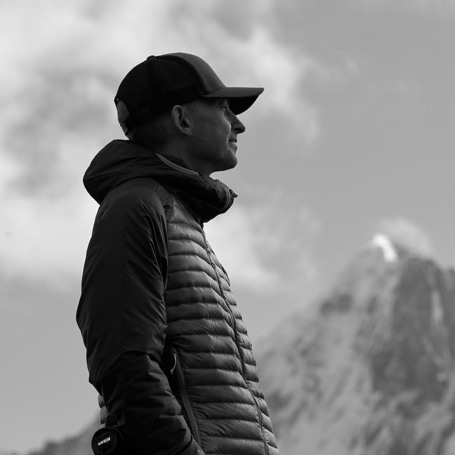

Andrew Revitt
I'm a designer who has worked on branding, graphic, web and print design. I've worked for agencies, startups and corporates in the travel, tech, sport, music and retail sectors. My work has been featured in books and the web, including WordPress Showcase, Media Queries and the Web Designers Handbook.
Professional designer since 1999
I’ve created branding, graphic, print and web design for a wide variety of clients. I also developed an online store for design resources and wrote a book on developing Tumblr themes. For the last year, I have been developing the Super Alpine brand and magazine.
I have a wide range of skills developed over many years. I can develop brands from scratch and build out web apps. I have also designed print publishing from business cards to magazines. I use Mac OS and work with all the creative apps.
Previous clients
Non-exhaustive, alphabetical list. Some were while working on behalf of other agencies.
- 2 degrees network
- Adidas
- Argos
- Ashdown
- Avon
- Codecademy
- Cosworth Engineering
- Donna Ida
- EMAP
- England Rugby
- Enska
- Factory Jackson
- Fifteen Restaurant
- French Property Finder
- Genex
- gg.co.uk
- Graham Agassiz
- HHB
- Hitachi
- Ian Poulter
- Jamie Oliver
- Julia Revitt Photography
- Lawn Tennis Association
- Martin Johnson OBE
- Pearsons
- Philip Kingsley
- RallyCross World
- Solid State Logic
- Sedex
- Sir Clive Woodward
- Soundcraft
- Southampton FC
- Spectolabs
- The RFU
- thinklab
- VW
- Whitworths
- Yamaha
In Print
The Web Designers Handbook , Making great Tumblr themes, Performance Bikes Magazine , SuperBike Magazine , Dirt Magazine , MBR Magazine , Super Alpine
On the web
Arc'teryx, Bellroy, Media Queries , WordPress Showcase , Line25 , VSCO Journal , Factory Jackson , Drivetribe , Admire the Web, BikeMagic, Creative Market, Super Alpine
Podcasts
The Grey Nato , The HKT Podcast
References
I've worked with Andrew on three projects now - he is a talented designer with a knack for great typography and imagery. He works very fast and quickly attains a clear understanding of the client's motivations and expectations.
For Sedex, he delivered an beautiful bootstrap-based style that incorporated an existing logo yet transformed the visual identity of the organisation. It has received a great deal of positive feedback from Sedex staff and members around the world.
Andrew was happy to join our development team on site, and also worked remotely with the front end developer to implement, extend and adapt the style as new functionality was delivered. The application is complex, but Andrew got up to speed with our AngularJS front end and continuous integration pipeline very quickly.
I would not hesitate to contact Andrew for any piece of digital design work - from a logo to a full application style, and I have recommended him to others on a number of occasions.
Tom Cunliffe - Sedex
I have worked with Andrew on a few projects now and have always valued his expertise and professionalism. Andrew delivers every project bang on time and puts in more than initially required - I will be working with Andrew in the future and highly recommend his services to anyone.
Christian Redecen-Davies - thinklab